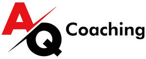

Trade Mark Journal No.2025/035 29 August 2025
UK00004240713 29 July 2025 (41)

No claim is made to the exclusive right to use the word 'Coaching' apart from the mark as shown.
- Class 41
- Coaching; Coaching [training]; Career counselling and coaching; Coaching services; Life coaching (training); Political speech training and coaching; Training or education services in the field of life coaching; Political debate training and coaching; Coaching relating to finance; Coaching in economic and management matters; Educational services in the nature of coaching; Career counselling [training and education advice]; Training in the field of business management; Education, teaching and training; Teacher training services; Training in business management; Training consultancy; Education and training in the field of business management; Training in business skills; Career counselling relating to education and training; Staff training services; Training of teachers; Training; Business training; Providing of training, teaching and tuition; Teaching academy services; Career and vocational training; Education and training consultancy; Arrangement of training courses in teaching institutes; Training in philosophy; Team building (education); Business mentoring services; Career advisory services (education or training advice); Management training consultancy services; Management training services; Training and further training consultancy; Training in administration; Career counseling [education]; Providing training courses on business management; Education services for managerial staff; Instructional and training services; Arranging professional workshop and training courses; Training of financial personnel; Conducting training seminars for clients; Courses for the development of consulting skills; Personal development training; Personnel training; Organisation of training seminars; Consultancy services relating to the education and training of management and of personnel; Business training consultancy services; Training for parents in parenting skills; Consultancy relating to vocational skills training; Organising of business training; Training and instruction; Education and training; Training services in the field of project management; Training in the field of advertising; Vocational skills training; Career and vocational counselling; Business training services; Courses (Training -) relating to management; Business training provided through a game; Training services relating to management consultancy; Health and fitness training; Training services; Organisation of training courses; Organisation of training; Health and wellness training; Training services relating to business management; Adventure training for children; Guidance (Vocational -) [education or training advice]; Vocational guidance [education or training advice]; Academic mentoring of school age children; Personal coaching [training]; Provision of training courses for young people in preparation for careers; Conducting workshops [training]; Organisation of youth training schemes; Providing of training; Providing training; Providing courses of training for young people; Providing online training seminars; Tutoring; Career information and advisory services (educational and training advice); Provision of training courses for young people in preparation for employment; Workshops (Arranging and conducting of -) [training]; Arranging and conducting of workshops [training]; Arranging and conducting of training workshops; Conducting of instructional, educational and training courses for young people and adults; Vocational skills training (Provision of -); Provision of training courses in personal development; Conducting training seminars; Provision of education and training; Provision of training and education; Organisation of seminars relating to training; Training relating to employment opportunities; Arranging and conducting of training seminars; Consultancy services relating to the development of training courses; Educational and training programs in the field of risk management; Sports tuition, coaching and instruction; Arranging of seminars relating to training; Providing courses of instruction for young people; Computerised training in career counselling; Sports coaching; Esports coaching; Sports coaching services; Teaching of life saving techniques; Arranging and conducting of youth American football training programs; Teaching of diet education; Personal trainer services [fitness training]; Arranging and conducting of youth soccer training programs; Education academy services for teaching art history; Education and training services in relation to business management; Education academy services for teaching construction drafting; Provision of training courses for young people in preparation for vocations; Education and training services in relation to real estate management; Organisation of youth training schemes relating to the building industry; Training of sports teachers; Training in the development of computer memories; Medical training and teaching; Organisation of youth training schemes relating to the tool industry; Personal fitness training services; Coaching services for sporting activities; Vocational education for young people; Training in the field of real estate management; Education services relating to business training; Teaching and training in business, industry and information technology; Educational services for teaching keyboard writing; Training of swimming teachers; Education and training in the field of music and entertainment; Providing of training in the field of health care and nutrition; School services for the teaching of art; Engineering training college services; Educational services for teaching acting; Health club services [health and fitness training]; Adult training; Teaching of meditation practices; Organization of education competitions; Training and education services; Education and training services; Arranging and conducting of American football training programs; Training of sports players; Meditation training.
Abdulkadir Ali